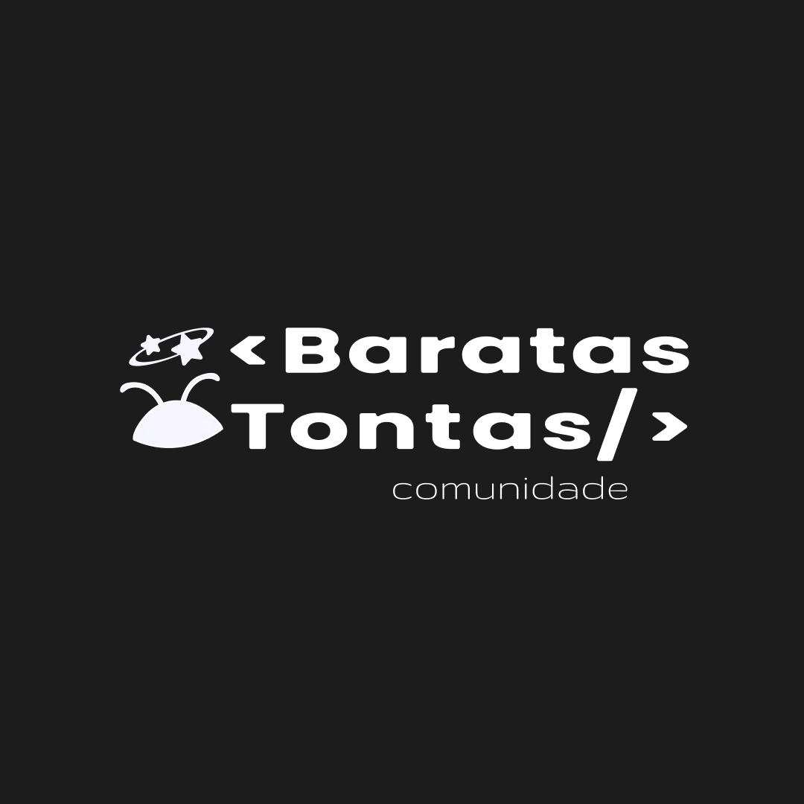

Baratas Tontas
@comunidadebaratastontas
Discord
WhatsApp
INSTAGRAM
GITHUB
♻️ Reciclando Embalagens de Cup Noodles
🔦 Transformando Copinhos de Café em Lanternas LED
♻️ Baratas Ecológicas
📖 Doação de Livros
Baratas Code